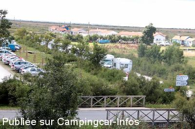

APCC = parkings réservés camping-cars sans services de :
HIERS BROUAGE
(N° 817)
Accès/adresse :
D3
17320 HIERS BROUAGE
Latitude : (Nord)
45.85285° Décimaux
ou
45° 51′ 10′′
Longitude : (Ouest)
-1.07743° Décimaux
ou
-1° 4′ 38′′
Tarif :
2012
Stationnement gratuit
Services :
Autres informations :
Aire communale
Tél : +33(0)546 851 916
http://www.hiers-brouage-tourisme.fr/fr/
Photos

Le 19/09/2014 par Gérard
Commentaires
de
Gérard
le 19/09/2014 :
Nouveau parking pour les CC le long du chemin
Complet lors de notre passage 21 Aout
Replis sur le parking près du cimetière à la sortie sud de la ville. Très calme
de
carpentier
le 19/07/2014 :
De passage à brouage nous nous arrétons pour passer la nuit petit tour dans le village beaucoup artisant petit coin sympa pour les amateur de vélo ancien il y a un musée qui vient d'ouvrir à voir
Yves et marie
de
Lou et Marie
le 10/03/2010 :
De passage en Février, nous ne sommes pas installés sur le parking qui était très boueux en cette période. Nous reviendrons car le village semble joli.
de
vidoc de charente
le 04/01/2010 :
Ville très sympa, stationnement sans problème. Il faut traverser la ville, route centrale pour les CC, le long des remparts. Aire très tranquille, calme, propre, passage de la police municipale. A voir cette ville fortifiée, les huitres à deux pas. Super coin, tout cela gratuit tout l'année.